기계가공조립기능사 (2004-02-01 기출문제)
1과목: 기계가공법 및 안전관리
1. 평기어를 가공할 수 있는 공작기계는?
- 호닝 머신
- 보링 머신
- 선반
- 밀링 머신
(정답률: 53%)

2. 선반작업에서 테이퍼를 깎는 방법이 아닌 것은?
- 심압대 편위에 의한 방법
- 복식 공구대에 의한 방법
- 왕복대 경사에 의한 방법
- 테이퍼 깎기 장치에 의한 방법
(정답률: 64%)
3. 운전을 정지하지 않고 일감을 고정하거나 분리 시킬 수 있는 선반척은 어느 것인가?
- 연동척
- 마그네틱 척
- 압축 공기척
- 단동척
(정답률: 50%)
4. 밀링작업에서, 분할용 크랭크 핸들을 2회전 하면 스핀들은 몇도 회전하는가?
- 36°
- 27°
- 18°
- 9°
(정답률: 68%)
5. 연삭가공에서, 조정숫돌 바퀴의 지름 d(mm), 그 회전수 n(rpm), 연삭숫돌 바퀴에 대한 조정숫돌 바퀴의 경사각 (도)을 α 라면, 1분간의 이송속도 v (m/min)는?
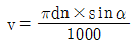
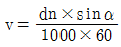
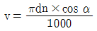
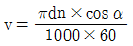
(정답률: 63%)
6. 마이크로미터의 사용 후 스핀들(spindle)과 앤빌(anvil)사이의 보관 방법으로 가장 옳은 것은?
- 약간 틈새를 주어 보관한다.
- 완전히 밀착시켜 둔다.
- 기름 헝겁을 끼워 꽉 조여 둔다.
- 예비 시험편을 사이에 밀착시켜 보관한다.
(정답률: 74%)
7. 선반 작업 중 주의사항으로 틀린 것은?
- 작업 중 장갑을 끼지 않는다.
- 작업 중 회전을 최대로 한다.
- 척에 손이 걸리지 않게 작업을 해야 한다.
- 작업 중 소매가 긴 것은 입지 않도록 한다.
(정답률: 90%)
8. 기계장치에 대한 안전기준에 어긋나는 것은?
- 일감과 절삭공구가 회전하는 기계에서는 장갑을 끼지 않는다.
- 동력으로 운전하는 기계는 동력 차단 장치가 있어야한다.
- 연삭기의 숫돌에는 견고한 안전 커버가 있어야 한다.
- 선반의 공구대 위에 공구를 올려 놓고 편리하게 사용한다.
(정답률: 92%)
9. KS규격 안전색채 사용통칙에서 지시, 의무적 행동을 표시하는 기본색은?
- 주황
- 파랑
- 빨강
- 자주
(정답률: 77%)
10. 연삭 숫돌 결합제의 구비조건이 잘못 설명된 것은?
- 충격에 견뎌야 하므로 기공이 없이 치밀해야 한다.
- 결합력의 조절범위가 넓어야 한다.
- 열이나 연삭액에 잘 견뎌야 한다.
- 성형성이 좋아서 어떤 모양도 쉽게 만들 수 있어야 한다.
(정답률: 61%)
11. 공작물을 정반위에 올려놓고 평행선을 긋거나 선반작업시 공작물의 중심을 맞출 때 사용하는 공구는?
- 캘리퍼스
- 서피스게이지
- 펀치
- 스트레이트에지
(정답률: 80%)
12. 선반 가공에서 칩 브레이커란 무엇인가?
- 바이트 날끝각
- 칩의 절단장치
- 바이트 여유각
- 칩의 한 종류
(정답률: 90%)
13. 기계띠톱 및 둥근톱에 대한 안전사항으로 틀린 것은?
- 둥근톱 기계의 작업대는 작업에 적합한 높이로 한다.
- 둥근톱 기계는 작업대의 밑 부분도 열어 놓는다.
- 띠톱기계는 규정이상의 속도로써 회전시키지 않는다.
- 띠톱날을 톱기계에 끼울때에는 균열이 있는지를 확인한다.
(정답률: 87%)
14. 접시머리나사의 머리부를 묻히게 하기 위하여 원뿔자리를 내는 것을 무엇이라 하는가?
- 카운터 싱킹
- 카운터 보링
- 스폿 페이싱
- 리밍
(정답률: 84%)
15. 일반적으로 주철 재료를 선삭할 때의 절삭제는?
- 피마자 기름
- 광물성 기름
- 동물성 기름
- 사용하지 않음
(정답률: 58%)
16. 브라운 샤프형 분할판에서 지름피치가 12, 잇수인 76인 스퍼 기어의 이를 깎을 때 분할판의 구멍열은?
- 16구멍
- 17구멍
- 18구멍
- 19구멍
(정답률: 38%)
17. 버니어 캘리퍼스에서, 어미자의 눈금선 간격이 1㎜ 이고 아들자의 눈금은 어미자 19㎜를 20등분 하였다면 아들자로 읽을 수 있는 최소 측정값은?
- 1/20㎜
- 1/18㎜
- 1/15㎜
- 1/10㎜
(정답률: 76%)
18. 밀링머신에서 사용되는 부속장치가 아닌 것은?
- 원형 테이블
- 래크 밀링장치
- 밀링 바이스
- 방진구
(정답률: 83%)
19. 센터나 척을 사용하지 않고, 일감의 바깥면을 연삭하는 기계는?
- 평면 연삭기
- 직립형 평면 연삭기
- 센터리스 연삭기
- 수평형 평면 연삭기
(정답률: 83%)
20. 슈퍼피니싱 가공을 설명한 것 중 틀린 것은?
- 정밀 다듬질에 사용한다.
- 가공에 의한 변질층의 두께가 적다.
- 비교적 경한 숫돌 입자를 높은 압력으로 일감에 접촉한다.
- 치수변화를 위한 가공이 아니고 고정도의 표면을 얻는 것이 주목적이다.
(정답률: 43%)
2과목: 기계재료 및 요소
21. 100㎜인 사인 바에서 30° 를 측정하려고 할 때 필요한 블록 게이지는 어느 것인가?
- 50 ㎜
- 52 ㎜
- 54 ㎜
- 56 ㎜
(정답률: 52%)
22. 선반의 규격을 나타내는 방법이 아닌 것은?
- 베드 위의 스윙
- 선반의 높이
- 왕복대 위의 스윙
- 양 센터 사이의 최대 거리
(정답률: 70%)
23. 절삭력의 변동이 적으며 절삭 작용이 원활하여 가공된 면이 가장 좋게 나타나는 칩의 형태는?
- 유동형 칩
- 전단형 칩
- 경작형 칩
- 균열형 칩
(정답률: 88%)
24. 다음의 밀링 커터 중에서 금속 절단에 가장 적합한 밀링커터(milling cutter)는?
- 엔드 밀(endmill)
- 총형 커터(formed cutter)
- 더브 테일 커터(dove tail cutter)
- 메탈 슬리팅 소(metal slitting saw)
(정답률: 59%)
25. 기계의 운전 작업 중에 정전이 되었을 때 조치해야할 일의 설명으로 잘못된 것은?
- 기계 주위의 공구나 측정기 등을 정리한다.
- 스위치를 끄고 전기가 들어올 때까지 기다린다.
- 필요한 경우 동력을 공급하는 메인 스위치도 끈다.
- 전기가 다시 들어올 때까지 운전상태 그대로 놓고 기다린다.
(정답률: 81%)
26. 브로치(broach)를 구조에 따라 구분한 것이 아닌 것은?
- 일체형(solid type)
- 인서트형(inserted type)
- 조립형(combined type)
- 플레이너형(planer type)
(정답률: 51%)
27. 직선 운동과 직선 운동의 결합이며 급속 귀환 운동(quickreturn motion) 기구를 사용하는 공작 기계는?
- 선반(lathe)
- 세이퍼(shaper)
- 밀링 머신(milling machine)
- 드릴링 머신(drilling machine)
(정답률: 60%)
28. CNC선반에서 나사절삭 기능 G코드는?
- G00
- G32
- G04
- G99
(정답률: 79%)
29. 일감을 200~ 800℃ 정도 가열하여 경도 및 절삭 저항의 감소를 이용한 절삭 가공법은?
- 고온절삭
- 저온절삭
- 냉온절삭
- 마멸절삭
(정답률: 73%)
30. 산업용 로봇에서 팔의 수축, 이완 운동의 기능을 하는 것은?
- 손목 요동( wrist yaw )
- 손목 회전( wrist bend )
- 수직 이동( vertical traverse )
- 방사 이동( radial traverse )
(정답률: 44%)
31. 일반적으로 세이퍼 가공에 사용하는 공구의 명칭은?
- 엔드 밀
- 바이트
- 호브
- 드릴
(정답률: 45%)
32. 기차바퀴처럼 길이가 짧고 지름이 큰 공작물 가공에 가장 적당한 선반은?
- 정면 선반
- 터릿 선반
- 모방 선반
- 공구 선반
(정답률: 75%)
33. 선반작업에서 끝면깎기에 가장 좋은 센터는?
- 평 센터
- 베어링 센터
- 하프 센터
- 파이프 센터
(정답률: 63%)
34. 직립 드릴링 머신의 크기를 나타내는 것으로 다음 중 가장 적합한 것은?
- 기둥의 길이
- 테이블의 이동거리
- 주축 끝에서 베이스면까지의 최소거리
- 주축 끝에서 테이블면까지의 최대거리
(정답률: 64%)
35. 연삭 숫돌의 모양 및 치수 표시법으로 그 순서가 가장 올바른 것은?
- 구멍지름 × 두께 × 외경
- 구멍지름 × 외경 × 두께
- 외경 × 두께 × 구멍지름
- 외경 × 구멍지름 × 두께
(정답률: 46%)
36. 18-4-1형의 고속도강에서 18-4-1에 해당하는 원소로 맞는 것은?
- W-Cr-Co
- W-Ni-V
- W-Cr-V
- W-Si-Co
(정답률: 75%)
37. 유체가 나사의 접촉면 사이의 틈새나 볼트의 구멍으로 흘러오는 것을 방지할 필요가 있을 때 사용하는 너트는?
- 캡너트
- 홈붙이너트
- 플랜지너트
- 슬리브너트
(정답률: 70%)
38. 다음 그림과 같이 스프링을 연결하는 경우 직렬접속은 어느 것인가? (단, W는 하중이고 K1, K2, K3 는 스프링 상수이다. )
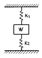
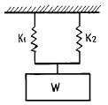
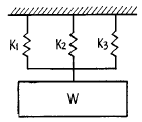
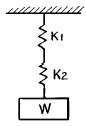
(정답률: 71%)
39. 인장 코일 스프링에 3㎏f의 하중을 걸었을 때 변위가 30㎜이었다면, 이 스프링의 상수는 얼마인가?
- 1/10 ㎏f/㎜
- 1/5 ㎏f/㎜
- 5 ㎏f/㎜
- 10 ㎏f/㎜
(정답률: 58%)
40. 피치원의 지름이 일정한 기어에서 모듈의 값이 커지면 잇수는?
- 많아진다.
- 적어진다.
- 같다.
- 이것만으로는 알 수 없다.
(정답률: 67%)
3과목: 기계제도(절삭부분)
41. 하중의 크기와 방향이 동시에 변화하면서 작용하는 하중은?
- 반복하중
- 교번하중
- 충격하중
- 정하중
(정답률: 72%)
42. 못을 뺄 때의 못에 작용하는 하중상태는 무슨 하중에 속하는가?
- 인장하중
- 압축하중
- 비틀림하중
- 전단하중
(정답률: 64%)
43. 다음 경도 시험 중 압입자를 이용한 방법이 아닌 것은?
- 브리넬 경도
- 로크웰 경도
- 비커스 경도
- 쇼어 경도
(정답률: 56%)
44. 탄소강에서 탄소량이 증가할 경우 경도와 연성에 미치는 영향을 가장 잘 설명한 것은?
- 경도증가, 연성감소
- 경도감소, 연성감소
- 경도감소, 연성증가
- 경도증가, 연성증가
(정답률: 68%)
45. 합금강에서 소량의 Cr 이나 Ni를 첨가하는 이유로 가장 중요한 것은?
- 경화능을 증가시키기 위해
- 내식성을 증가시키기 위해
- 마모성을 증가시키기 위해
- 담금질후 마텐자이트 조직의 경도를 증가시키기 위해
(정답률: 64%)
46. 구름베어링 기본구성요소 중 회전체 사이에 적절한 간격을 유지해 주는 구성요소를 무엇이라 하는가?
- 리테이너
- 내륜
- 외륜
- 회전체
(정답률: 71%)
47. 다이캐스팅용 알루미늄(Al)합금이 갖추어야 할 성질로 틀린 것은?
- 유동성이 좋을 것
- 응고수축에 대한 용탕 보급성이 좋을 것
- 금형에 대한 점착성이 좋을 것
- 열간취성이 적을 것
(정답률: 65%)
48. 피치 3 mm인 2줄 나사의 리드(lead)는 얼마인가?
- 1.5 mm
- 6 mm
- 2 mm
- 0.66 mm
(정답률: 89%)
49. 금속재료에 비해 구리의 일반적 성질을 설명한 것중 다른 것은?
- 전기 및 열의 전도성이 우수하다.
- 비자성체이다.
- 화학적 저항력이 커서 부식되지 않는다.
- Zn, Sn, Ni, Ag등과는 합금이 안된다.
(정답률: 55%)
50. 온도가 변화될 때 재료의 길이 변화에 영향을 주는 인자가 아닌 것은?
- 선팽창계수
- 단면적
- 재료 길이
- 온도차
(정답률: 41%)
51. 굵은 일점 쇄선으로 표시되어 있을 경우, 다음 중 우선적으로 검토해야 할 사항은?
- 기어의 피치선인가 여부
- 인접부분을 참고로 표시하였나 여부
- 특수 가공을 지시하는 선인가 여부
- 이동 위치를 표시하고 있는가 여부
(정답률: 69%)
52. 축의 치수가
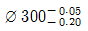
, 구멍의 치수가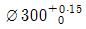
인 헐거운 끼워마춤에서 최소틈새는?- 0
- 0.2
- 0.15
- 0.⑤
(정답률: 67%)
53. 가공 줄무뉘 방향기호에서
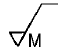
의 설명으로 가장 적합 한 것은?- 가공으로 생긴 선이 방사상
- 가공으로 생긴 선이 거의 동심원
- 가공으로 생긴 선이 두방향으로 교차
- 가공으로 생긴 선이 다방면으로 교차 또는 무방향
(정답률: 74%)
54. 베어링에서 63⑤ 의 안지름은 몇 mm 인가?
- 25
- 30
- 15
- 35
(정답률: 82%)
55. 3각법으로 그린 투상도 중 잘못된 투상이 있는 것은?
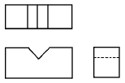
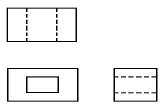
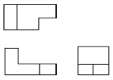
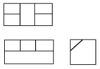
(정답률: 58%)
56. 보기 입체도를 3각법으로 올바르게 투상한 것은?
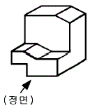
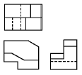
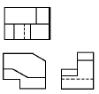
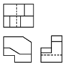
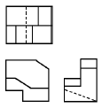
(정답률: 52%)
57. 기계제도 도면에서 치수 수치 앞에 알파벳 소문자 티(t)가 붙여져 있다. 치수 앞의 기호 t 가 의미하는 것은?
- 모따기
- 판의 두께
- 구의 지름
- 정사각형의 변
(정답률: 85%)
58. 보기와 같이 직각도 공차를 최대실체공차방식으로 나타낸 경우 최대로 허용되는 직각도 공차는 얼마인가?
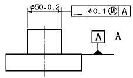
- 0.1
- 0.2
- 0.4
- 0.5
(정답률: 24%)
59. 보기 도면은 어떤 물체를 제3각법으로 투상한 정면도와 우측면도이다. 평면도로 가장 적합한 것은?
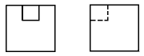
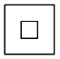
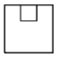
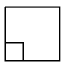
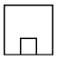
(정답률: 78%)
60. 테이퍼 핀의 호칭지름을 나타내는 부분은?
- 작은 쪽의 지름
- 굵은 쪽의 지름
- 중간부분의 지름
- 핀 구멍 지름
(정답률: 61%)